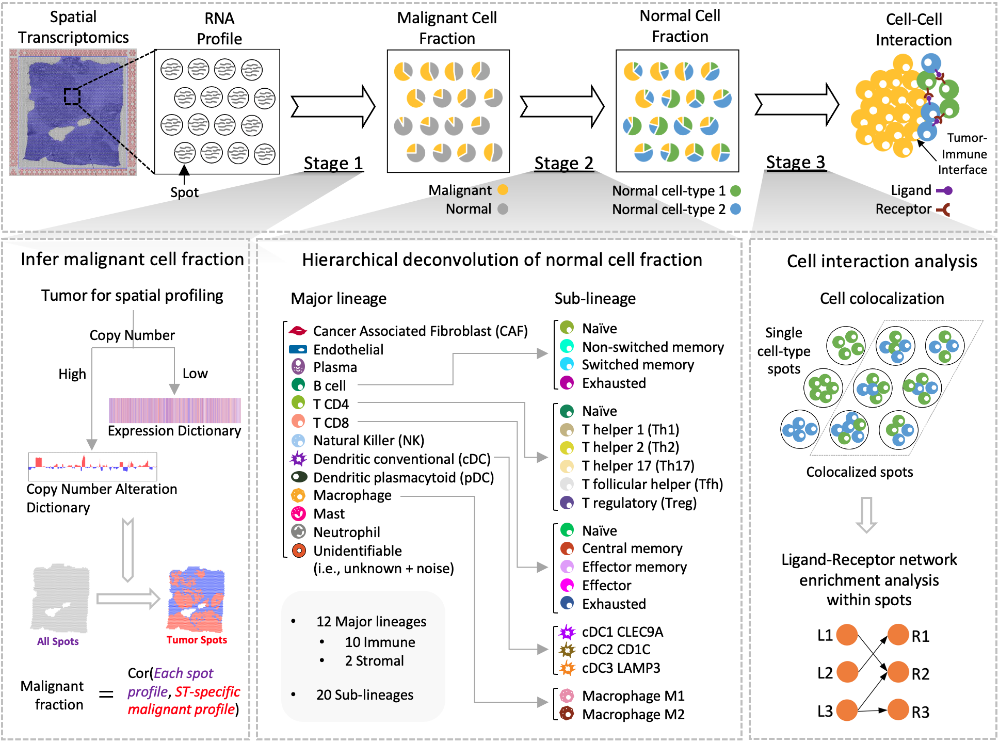

SpaCET is an R package for analyzing cancer spatial transcriptomics (ST) datasets to estimate cell lineage and intercellular interactions in tumor microenvironment. Briefly, SpaCET first estimates cancer cell abundance by integrating a gene pattern dictionary of common malignancies. SpaCET then uses a constrained regression model to calibrate local tissue densities and determine stromal and immune cell lineage fraction. Further, SpaCET can reveal putative cell-cell interactions in tumor microenvironment. Additionally, although SpaCET does not require any input cell reference profile to process tumor ST data, SpaCET can still accept a matched scRNA-seq dataset as customized references to carry out cell type deconvolution.

Installation
To install SpaCET, we recommend using devtools:
# install.packages("devtools")
devtools::install_github("data2intelligence/SpaCET")Dependencies
- R version >= 4.2.0.
- R packages: Matrix, jsonlite, ggplot2, reshape2, patchwork, png, jpeg, shiny, MUDAN, factoextra, NbClust, cluster, parallel, psych, BiRewire, limma.
Example
library(SpaCET)
visiumPath <- file.path(system.file(package = "SpaCET"), "extdata/Visium_BC")
SpaCET_obj <- create.SpaCET.object.10X(visiumPath = visiumPath)
SpaCET_obj <- SpaCET.deconvolution(SpaCET_obj, cancerType="BRCA", coreNo=8)
SpaCET_obj@results$deconvolution$propMat[1:13,1:5]
## 50x102 59x19 14x94 47x13 73x43
## Malignant 2.860636e-01 1 6.845966e-02 3.899756e-01 9.608802e-01
## CAF 3.118545e-01 0 3.397067e-01 1.111980e-01 3.372692e-02
## Endothelial 5.510895e-02 0 1.427060e-01 3.080531e-02 5.263544e-03
## Plasma 2.213392e-02 0 1.507382e-02 1.183170e-02 9.071809e-06
## B cell 3.885793e-03 0 9.271616e-02 1.406470e-01 1.329085e-06
## T CD4 1.344389e-01 0 1.554305e-02 1.249414e-01 1.112392e-05
## T CD8 7.578696e-03 0 2.514558e-07 1.379856e-03 1.123043e-06
## NK 7.104005e-04 0 1.670019e-06 4.890387e-08 3.562557e-07
## cDC 1.421632e-07 0 8.278023e-02 7.584295e-02 2.851146e-07
## pDC 1.606443e-06 0 2.283754e-02 1.805671e-02 3.878344e-07
## Macrophage 1.703304e-01 0 5.021248e-02 9.531511e-02 9.253645e-07
## Mast 7.905067e-08 0 1.621498e-05 1.333430e-07 1.162099e-07
## Neutrophil 1.380073e-05 0 9.528996e-07 1.167503e-08 9.908635e-05